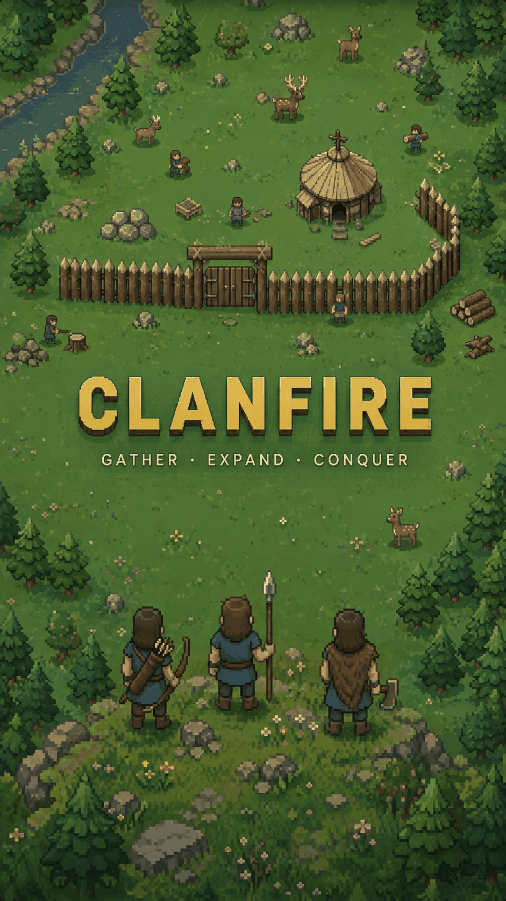
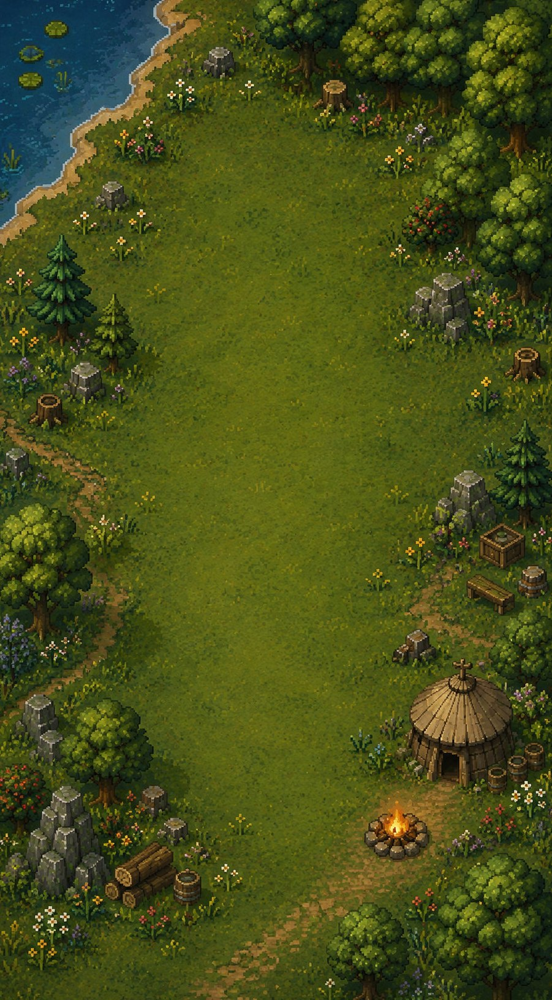
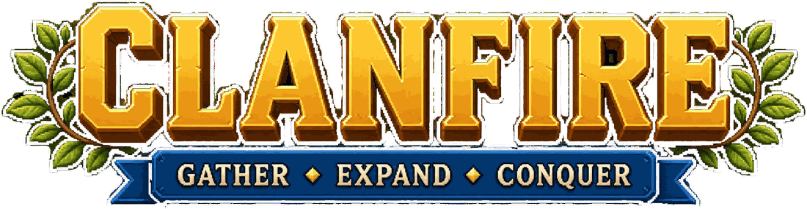

GATHER · EXPAND · CONQUER
Difficulty
Map size
Landform
Every game rolls a fresh map, a random villager tunic for your people, and a rival chief with their own temperament — scouts will size them up on day one.
The gift your people begin with. Your rival is choosing too.
Choose your Origin — the gift your people begin with. Each game deals three cards from twenty; you keep one.
Your rival is choosing too. On Calm you'll see their card; on Moderate only its name; on Hard nothing — read their behavior, or scout it out.
Save file
Cloud autosave
Autosaves go to the slot this game was saved to or loaded from, plus a local emergency snapshot on this device.
Your village
…
The recovery token brings your cloud saves to another device. Treat it like a password — anyone holding it can play as you.
Save file
📜 Event log
The ten greatest chiefs, all the world over. Victories only — and the hardest roads score highest.
Fetching…
Drag to pan, pinch to zoom, tap to select.
Tap a build button, then a tile, to place a building. Construction needs a villager — an idle one is sent automatically, or tap a villager and then the site.
Tap a villager, then a forest, hill, orchard or berry tile to gather. Tiles run dry and turn to stumps or pebbles — worked-out land regrows in time, but slowly.
Farms, hunting lodges, lumber camps and quarries only produce while a villager is stationed there — tap the building, then "station a villager".
Villagers can also fish from the shore — but only where fish jump. Watch the water, or build fishing boats at the Dock for deeper waters.
Every valley is short on one resource. Scouts tell you which on day one — claim it before the rival does.
Wolves, bears and barbarian raiders roam the wilds. Barbarians land in boats, burn what they find, and leave — they fight everyone, including your rival.
Train defenders at the Barracks, archers at the Range, riders at the Stable, siege at the Workshop. Each hall unlocks a new unit at every level — mix strengths to cover weaknesses.
Villagers shelter inside the Town Center when raiders come knocking.
The Dock builds fishing boats, warships and troop transports. Transports carry your soldiers across water to distant shores — and enemy shores.
Old sailors speak of something vast beneath open water. Keep your fishing boats close to home... or send two warships as escort.
Win: destroy the rival tribe's Town Center. Lose: yours falls. Nothing else ends the game — build up, then go get them.
Saves live in the cloud automatically (see Settings), and you can always download a save file as a backup.
‹ swipe for more ›